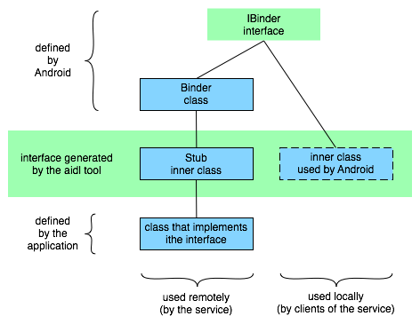

Application基础
Android应用程序是用Java语言编写的。被编译的代码和数据以及应用程序需要的资源文件被打包aapt tool打包为Android package格式，打包的文件以.apk结尾。这种文件是应用程序发布和安装到移动设备的方法；也是用户下载到设备上的文件。同一个.apk文件中的所有代码被当作是一个应用程序。
在很多方面，每个Android应用生存在自己的世界中：
- 默认情况下，所有应用程序运行在自己的Linux进程中。Android在应用程序的代码需要执行时启动进程，当它不再被需要和系统资源被其它应用程序需要时停止。
- 每个进程有自己的虚拟机，因此应用程序代码与其它应用程序的代码是隔离的。
- 默认情况下，每个应用程序被赋予了一个唯一的Linux用户ID。这使得只能访问应用程序自己的文件——尽管有方法将它们导出给其它的应用程序。
有可能将两个应用程序组织为使用相同的用户ID，在这种情况下它们将可以互相看到对方的文件。为了保护系统资源，拥有相同ID的的应用程序也可以被组织到相同的Linux进程中，共享同一个虚拟机。
应用程序组件
Android的一个主要的功能是某个应用程序可以使用其它应用程序的元素（在这个应用程序许可时）。比如，如果你的应用程序需要显示滚动的图片列表而另一个应用程序已经开发了一个并且将它对外开放，这时你可以使用它，而不是重新开发一个。你的应用程序不需要包含这个应用程序的代码或者链接（link to）它。而只是在这个需求出现时运行那个应用程序的那段代码。
为实现这个目的，系统必须在需要应用程序的一部分时启动应用程序进程，并实例化那部分Java对象。因此，与绝大多数的操作系统不同，Android应用程序没有单一的程序入口（比如没有main()函数）。而是拥有可以根据需要实例化和运行的组件。有4种类型的组件：
Activities
一个Activity描述一个可聚焦（focused）的并可被用户操作的用户界面。比如，某个activity可能描述了菜单列表项用户可以从中选择，或它显示单个图片及它的标题。一个文本消息应用程序可能有一个activity来显示联系人列表，另一个activity用于编写消息，其它的activities用于浏览旧消息或修改设置。尽管它们组合在一起构造出了聚合性的用户界面，但每个activity与其它activity间仍然是独立的。每个activity都被实现为Activity类的子类。
一个应用程序可能包含单个或多个activity。有多少个activities依赖于应用程序和它的设计。通常，有一个作为应用程序启动时的第一个。从一个activity到另一个是由当前的这个启动另一个。
每个activity被设置了一个默认的窗口对象用于绘图。通常，这个窗口填充整个屏幕，但也可以小于屏幕浮动于其它窗口之上。一个activity也可以使用额外的窗口——比如，弹出式对话框或者当用户从屏幕中选择某些特殊的项时向用户显示重要提示信息的窗口。
窗口中的可视化内容是由一组有层次结构的views提供的——这些对象从View类派生。每个view控制窗口中的一个长方形区域。父view包含和控制它的子view的布局。作为叶节点的view被绘制到长方形区域中，在这个区域中它们控制和响应用户动作。因此，view是activity中与用户交互发生的地方。比如，一个view可能显示了一个图像并在用户点击图像时发生动作。Android有大量的预定义的view，如： 按钮、文本框、滚动条、菜单项、checkbox等等。
窗口中的这个有层次结构的views通过activity提供的Activity.setContentView()方法被设置到窗口中。这个content view位于层次结构的根节点上。
Services
服务没有用户界面，但它可以一直在后台运行。比如，服务可以后台播放音乐，或从网络下载数据或者将计算结果提供给activities。每个服务都从Service类继承。
一个典型的例子就是媒体播放器从播放列表中播放歌曲。播放器应用程序可能有一个或多个activities来让用户选择歌曲和开始播放。但是，音乐音乐播放过程本身不能由activity来处理，因为用户希望在退出播放器进入其它界面时仍然能播放音乐。为了使音尔播放继承进行，播放器的activity将启动一个后台服务。系统将在播放器的activity未显示在屏幕上时继续播放音乐。
系统允许连接（绑定）到正在运行的服务（如果服务没有运行，则将会启动它）。当连接上服务后，你可以通过服务暴露的接口（interface）来与服务通讯。比如音乐服务，这个接口可能允许用户暂停、倒带、停止和重新开始播放。
与activities和其它组件类似，服务运行于应用程序的主线程。因此它们不会其它组件和用户界面，它们在处理耗时任务（比如音乐播放）时通常产生另一个进程。
Broadcast receivers
Broadcast receiver是一个组件，它用于接收和对广播信息作出反应。许多广播信息来源于系统的代码——比如，广播时区信息被修改，电源电量低，拍了一个照片或用户修改了语言首选项。应用程序也可以发出广播信息——比如，让其它应用程序知道某些数据被下载到设备并且已经可以使用。
应用程序可以有任意数量的broadcast receivers来响应任何信息。所有的receivers都继承于BroadcastReceiver类。
Broadcast receivers不显示用户界面。但它们可以在收到信息进行响应时启动一个activity，或者可以使用NotificationManager来向通知用户。通知可以通过闪烁背光、振动、播放音乐等方式提醒用户注意。典型的方式是在状态条上显示一个图标，从这里用户可以从这里打开并获取消息。
Content providers
Content provider可以指定应用程序数据允许共享给其它应用程序的数据。数据可以被存储在文件系统或SQLite数据库中，或者以其它允许的方式存储。Content provider继承自ContentProvider类并实现了标准的一组方法允许应用程序接收和存储数据。但是，应用程序并不会直接调用这些方法。而是使用ContentResolver对象的方法调用来实现。ContentResolver可以与任何content provider通讯，它与provider协作管理进程间的复杂通讯。
无论何时一个请求都应该由一个特定的组件来处理，Android确保这个组件所属的应用程序运行，如果没有运行就启动它，如果对应的组件没有可用的实例就创建新的实例。
Activating components: intents
Content providers在它们被作为从ContentResolver发出的请求的目标时被激活。其它三个组件——activities、services和broadcast receivers——则通过被称为intends的异步消息来激活。一个Intent是一个Intent对象包含了消息内容。对于activities和services，它标明要请求的动作和并指定要操作的数据的URI，等等。例如，它可以表达请求一个activity展示图片给用户或让用户编辑文本。对于broadcast receivers，intent对象标明将要发生的动作。例如，它可以声明它对相机按钮被按下的动作感兴趣。
不同的方法来激活每种类型的组件：
- Activity通过传递给Context.startActivity()或Activity.startActivityForResult()一个intent对象来激活。响应的activity可以通过getIntent()方法看到调用它时初始的intent。Android通过调用activity的onNewIntent()方法来将它传递后续的intent。
一个activity通常会启动下一个。如果它需要它启动的activity的返回值，要调用startActivityForResult()而不是startActivity()。比如，它启动一个activity让用户选择一个照片，它可能返回选中的照片。返回值是保存在intent对象中的，在调用onActivityResult()方法时被传递进来。
-
Service通过传递一个intent对象到Context.startService()来启动。Android调用service的onStart()方法并传递intent对象给它。类似的是，可以通过将intent传递给Context.bindService()方法建立目标服务和调用组件之间的连接。服务在onBind()调用中接收intent对象。（如果服务没有运行，bindService()可以选择启动它）。例如，有个activity可以与先前启动的音乐播放服务建立连接以便提供用户界面给用户控制播放。这个activity可以调用bindService()来建立连接，然后调用service定义的方法影响音乐播放。
-
应用程序可以传递一个intent对象到类似Context.sendBroadcast()、Context.sendOrderedBroadcast()和Context.sendStickyBroadcast()等方法中来开始一个广播。Android通过调用接收者的onReceive()方法投递这个intent到任何对这个广播感兴趣的接收者。
关闭组件
Content provider只在响应ContentResolver的请求时才是活动的。Broadcast Receiver只在需要响应广播信息时才是活动的。因此，不需要显式的关闭这些组件。
Activities和Services都是有可能长期运行的。Android提供了方法来关闭activities和services：
- Activity可以调用它的finish()方法。一个Activity可以使用finishActivity()关闭另一个activity（这个activity由startActivityForResult()启动）。
- Service可以调用它的stopSelf()方法，或者调用Context.stopService()。
组件在不再被使用或者Android进行垃圾收集时也可能被系统关闭。
Mainfest文件
在Android启动一个应用程序组件之前，它必须知道组件的存在。因此，应用程序需要在mainfest文件中申明这些组件并把它打包到.apk文件中。
Mainfest文件是XML文件，它的名字被固定为AndroidMainfest.xml。它不仅仅申明了应用程序中的组件，还设定了其它的信息，如：应用程序需要的程序库（除默认的Android库外）和希望得到的特权信息。
但是mainfest文件主要的任务是将应用程序的组件信息告诉Android。例如下面的一个Activity的申明：
|
|
<activity>元素的name属性标明了实现了这个activity的Activity的子类。icon和label属性指向包含了显示给用户的图标和标签的资源文件。
其它组件的申明方式与这类似——用于services的<service>元素，用户broadcast receivers的<receiver>元素和用于content providers和<provider>元素。未出现在mainfest中的activities、services和content providers对系统是不可见的并且永远不会被运行。但是，broadcast receivers可以在mainfest中申明也可以在代码中动态的创建（作为BroadcastReceiver对象）并使用系统提供的Context.registerReceiver()注册。
Intent filters
Intent对象可以显示的指出目标组件。如果它指明了，Android将查找出那个组件（根据mainfest中的申明信息）并激活它。但是如果目标未明确的给出，则Android需要定位到最佳的一个组件来响应这个intent。它通过比较intent对象可能的目标的intent filters来决定。一个组件的intent filters告诉Android这个组件可以处理的intents的类型。与组件的其它信息一样，它也放在mainfest文件中申明。例如，下例在上面的activity的mainfest文件中添加了两行intent filters：
|
|
第一个filter——组合了“android.intent.action.MAIN”和“android.intent.category.LAUNCHER”——这是一个常用的方法。它表明这个activity应该显示在launcher中。换言之，这个activity是这个应用程序的入口，用户从应用程序launcher中选择到的属于这个应用程序的第一个activity。
第二个filter申明了这个activity可以操作的数据类型。
一个组件可以有任意多的intent filters，每个申明一组不同的功能。果它没有filters，则它只允许被那些显示的申明了目标组件的intents激活。
对于那些在代码中创建和注册的broadcast receiver，intent filter是直接作为IntentFilter对象实例化的。所有其它filter都是在mainfest中设置的。
Activities和Tasks
前面说过，一个activity可以启动另一个，这包括定义于不同应用程序中的另一个。设想一下，你想要让用户在street map中显示一些位置。已经有一个activity可以实现这个功能，因此你的activity需要做的就是将需要的信息放到一个intent对象中并将它传递给startActivity()。地图将显示相关的信息。当用户点击BACK键后，原来的activity重新显示到屏幕上。
对于用户而言，它会将map view当作你应用程序的一部分，即使它是由另一个应用程序定义并运行于那个应用程序的进程中。Android给用户提供的这种用户体验是通过将这两个Activity组织到相同的task中。简单来说，task就是用户体验到的“application”。它由一组相关的activities组成，被组织为一个堆栈。堆栈中的根activity是开始任务的那个——通常，它是用户从launcher中选择的那个activity。位于堆栈顶端的activity是当前在运行的展示给用户的这个。当一个activity启动另一个时，新的activity被推入堆栈中。新启动的这个变成正在运行的activity。前一个activity仍然在堆栈中。当用户按下BACK时，当前的activity从堆栈中弹出前一个activity恢复成为正在运行的activity。
堆栈包含对象，如果任务对于同一个Activity有多个实例被打开——多个map view——堆栈中对于每个实例都有单独的入口。堆栈中的activities永远不会重新被整理排序，只会推入和弹出。
一个任务就是一个activities堆栈，而不是一个类或mainfest文件中的一个元素。因此，没有办法不依赖于activities来设置任务的值。任务的值整体上是在根activity处设置的。
任务中的所有activities是作为一个整体移动的。整个任务（整个activity堆栈）可以被放到前台或后台。设想一下当前的任务有4个activities在它的堆栈中——在当前的activity下有3个activity。当用户按下;HOME键时回到launcher，然后选择了一个新的应用程序（实际上是一个新的任务）。当前的任务转到后台，新任务的root activity被显示出来。然后，隔一段时间后，用户回到主界面重新选择了选前的应用程序（前一个task）。那个有4个activities的任务将回到前台。这时用户按下;BACK，屏幕将不会显示刚才离开的那个activity（之前那个任务的root activity）。而是当前任务的activities堆栈的顶部弹出并显示之前的一个activity。
上面描述的是activites和tasks的默认行为。但是也有方法修改它的几乎所有方面。Tasks与activities的关联，和task中activity的行为是由启动activity的intent对象里的标识位和mainfest文件中<activity>元素的属性决定的。请求者和响应都有权决定将发生什么样的情况。
主要的intent标识有：
|
|
主要的<activity>属性有：
|
|
下面的章节将描述这些标识和属性，以及它们如何互相影响，如何考虑和应用它们。
Affinities and new tasks
默认情况下，应用程序中的所有的activities都有一个affinity——有个选项标识它们属于相同的任务。但是，可以在<activity>元素可以设置每个activity的taskAffinity属性。定义于不同应用程序的activities可以共享同一个affinity，或者，定义于同一个应用程序的activities可以赋予不同的affinities。Affinity通常在两种情况下出现：当启动activity的Intent对象包含了FLAG_ACTIVITY_NEW_TASK标识，和当activity的allowTaskReparenting属性设置为“true”。
-
FLAG_ACTIVITY_NEW_TASK标识
前面说过，新的activity总是被放到调用startActivity()启动它的任务中。它被推入调用者相同的堆栈。但是，如果传递给startActivity()的intent对象包含了FLAG_ACTIVITY_NEW_TASK标识；系统会将把它作为一个不同的任务来安置这个新的activity。就像这个标识名所表达的，它将是一个新的任务。但是，这并不是总会创建新的任务。如果已经有存一个与这个activity的affinity相同的任务，则会将这个activity归于那个任务。如果不存在才开始一个新任务。
-
allowTaskReparenting属性
如果一个activity的allowTaskReparenting属性被设置为“true”，在与它具有相同的affinity相同的任务进入前台时，它可以从启动它的任务转移到与它的affinity相同的这个任务里。例如，假设某个旅行应用程序中选择某个城市后会有个activity报告天气情况。它与这个应用程序里的其它activities有相同的affinity，并且它允许reparent（allows reparenting）。如果你的某个activities启动了这个activity，则它将初始化为与你的activity属于同一个任务。但是，如果这个旅行程序下次切换到前台时，显示天气信息的这个activity将被重新赋给旅行程序，并在旅行程序中显示。
如果一个.apk文件中包含多个“应用程序”（从用户角度来看），你可能会需要给不同的activites赋予不同的affinities。
Launch Modes
有4种launcher Modes可以赋给<activity>元素的launcherMode属性：
|
|
这些modes的区别在于：
- 哪个任务将hold响应intent的activity。对于“standard”和“singleTop” modes，它将是发起intent的那个任务（并调用了startActivity()）——除非intent对象包含FLAG_ACTIVITY_NEW_TASK标识。在这种情况下，将按上一节描述的方式选择一个不同的任务。
“singleTask”和“singleInstance” modes标明了activities总是们于task的根节点。它们定义了一个任务；它们永远不会launched到另一个任务。
- 是否允许出现这个activity的多个实例。“standard”和“singleTop” activity可以被实例化多次。它们可以属于多个不同的任务，同一个任务中也可以有相同的activity的多个实例。
“singleTask”和“singleInstance”则只允许一个实例。由于这些activities位于任务的根节点，这也限制了同一时刻同一个任务在设备上只能有单个实例。
- 实例在其所属的任务中是否可以有其它activities。“singleInstance”的activity在它所属的任务中是否只允许有一个实例。如果它启动另一个activity，则这个activity是否将被设置为另一个任务依赖于它的launch mode——如果intent中设置了FLAG_ACTIVITY_NEW_TASK。则这时，“singleInstance”mode与“singleTask”是等效的。
其它三种模式允许多个activities属于（同一）任务。“singleTask”activity将总是任务的根activity，但它可以启动其它activities，并将这些activities设置为与它相同的task。“standard”和“singleTop”的activites可以出现在任务堆栈的任何地方。
- 是否需要一个新的实例来处理一个新的intent。对于默认的“standard”mode，总是会创建新的实例来响应新的intent。每个实例处理一个intent。对于“singleTop”mode，一个已经存在的实例将会重用于处理新的intent，如果它位于目标任务的activity堆栈的顶部。如果它不在顶部，它将不会被重用，会为这个新的intent对象创建一个新的实例然后将这个实例推入堆栈。
例如，假设有一个任务的activity堆栈包含了一个root activity A以及B activity和C activity，堆栈的内容是A-B-C-D。一个intent到达了需要一个类型的D的activity。如果是在默认的“standard”模式下，将产生一个新的实例堆栈的内容会变成A-B-C-D-D。但是，如果D的launch mode为“singleTop”；则有已有的实例将用于处理这个intent（由于已有的这个实例位于栈顶），因此堆栈仍然是A-B-C-D。
但是，如果到达的intent需要类型为B的activity，则会产生一个新的B类型的实例而不会管B的mode是“standard”或“singleTop”（因为B并不在栈顶），因此堆栈的内容会变为A-B-C-D-B。
前面提过，永远不会有多个“singleTask”或“singleInstance”的activity，因此这个实例将被用于处理所有新的intents。“singleInstance”的activity总是位于堆栈的顶部（因为它是任务中唯一的activity），因此它总是位于处理intent的位置。但是“singleTask”类型的activity却并不一定会位于堆栈的顶部。如果它没有位于栈顶，则相应的intent将被丢弃。（即使intent被丢弃，它仍然会导致task切换到前台）
当一个已经存在的activity被请求处理一个新的intent时，这个intent对象被传递到activity的onNewIntent()调用中。（最初启动这个activity的intent可以通过调用getIntent()来获取）
注意，当创建了新的activity来处理新的intent时，用户总是可以使用BACK键返回前一个状态（回到前一个activity）。但是当使用已经存在的activity处理新的intent时，用户不可以按BACK键回到这个activity实例接收到这个intent对象之前的界面。
Clearing the stack
如果用户离开某个任务较长时间，系统会清理掉除根activity之外的其它activities。当用户再次返回任务时，任务与用户离开前相同，只是它会显示初始的那个activity。这意味着，过一段时间后，用户重新回到任务时有可能要放弃之前所做的一些操作。
上面的情况是默认的情况。也有些activity属性可以用于控制和修改这种行为：
-
alwaysRetainTaskState属性
当任务的root activity的这个属性被设置为“true”时，前面所说的默认行为不会发生。即使过很长时间，任务仍将保留整个activities堆栈。
-
clearTaskOnLaunch属性
当任务的root activity的这个属性被设置为“true”时，当用户离开task并重新回来时，root activity之外的activity将被清理掉。即与alwaysRetainTaskState是相反的。用户返回task时总是回到初始的状态，即使只过很短的时间。
-
finishOnTaskLaunch属性
这个属性与clearTaskOnLaunch类似，但它只工作在单个activity，而不是整个task。它可以导致任何activity消失，也包括root activity。当它被设置为“true”时，activity只会存在于当前的会话。如果用户离开任务又重新回到任务，它将不会再存在。
有另一个方法强制从堆栈中删除activities。如果intent对象包含FLAG_ACTIVITY_CLEAR_TOP标识，目标任务堆栈中已经有一个相应类型的activity来处理这个intent，所有位于那个实例之上的activities将被清除以便那个activity位于堆栈顶部来响应这个intent。如果指定的activity的launch mode是“standard”类型的，它也将被从堆栈删除，然后创建一个新的实例来处理这个intent。这是因为launch mode为“standard”的activity总是会创建新的实例来处理新的intent对象。
FLAG_ACTIVITY_CLEAR_TOP通常与FLAG_ACTIVITY_NEW_TASK一起使用。当同时使用时，这些标识总是会找到另一个任务中已经存在的activity然后将它设置到响应intent的位置。
Starting tasks
一个activity可以设置为task的入口，给它一个intent filter “android.intent.action.MAIN”作为action，“android.intent.category.LAUNCHER”作为category。这个类型的filter将会导致在application launcher中显示图标和标签，让用户可以启动这个应用程序或重新进入已经启动的应用程序。
后者相当重要：用户必须可以离开任务后能重新回到任务。因此，“singleTask”和“singleInstance”这两种launch mode总是会导致初始化新的task，应该只用于有MAIN和LAUNCHER filter的activity。设想下下，当没有这个filter时将发生什么：一个intent启动了一个“singleTask”的activity，初始化了一个新的task，用户在这个task上使用了一段时间。然后按HOME键。这时这个task在主屏幕上变得不可见。因为它没有被显示在application launcher上，用户不能再回到这个task了。
类似还有FLAG_ACTIVITY_NEW_TASK标识。如果这个标识导致一个activity启动了一个新的task用户按HOME键离开，则必须要有一些方法让用户返回来。某些情况下（比如通知管理）总是在外部任务中启动activities，而不会在自身中启动，因此它总是在传递给startActivity()的intent中设置FLAG_ACTIVITY_NEW_TASK。如果你有一个activity可能被外部的实体调用时有可能使用这个标识，注意那个用户会有一个独立的方法返回到它启动的task中。
如果你不希望在那种情况下用户返回到那个activity，就需要设置<activity>元素的finishOnTaskLaunch为“true”。
进程和线程
当应用程序的第一个组件需要运行时，Android启动一个带有单个线程的Linux进程来执行。默认情况下，这个应用程序的所有组件运行时那个进程和线程中。
当然，你也可以将组件运行到其它进程中，也可以在任何进程中生成额外的线程。
进程
组件运行的进程是通过mainfest文件控制的。组件元素——<activity>，<service>，<receiver>，<provider>——每个都有一个process属性可以指定组件运行的进程。这些属性可以设置每个组件运行在自己的进程中，或者一些组件共享同一进程，而其它组件不。他们也可以设置让不同应用程序的组件运行在相同的进程中——提供了应用程序共享相同的Linux用户ID并且有相同的授权。<application>元素也有process属性，可以设置一个默认值给所有组件。
所有组件都在初始化到特定进程的主线程中，系统调用组件时从这个线程分派。不会为每个实例单独创建线程。所以，响应那些调用的方法——像View.onKeyDown()，这个方法用于报告用户的动作和生命周期通知——总是运行在进程的主线程中。这意味着在被系统调用时组件不应该执行长时间或阻塞的操作（比如网络操作或计算循环），因为这将阻塞这个进程中的任何其它组件。你也可以为长时间的操作生成新的线程。
Android可以决定在某些点关闭进程，比如当内存不足并且其它进程需要立即为用户提供服务时。运行在进程中的应用程序组件因此被销毁。当重新需要它们时将重新启动这些组件。
当决定要关闭哪个进程时，Android衡量它们对用户的重要性。比如，相比那些显示在屏幕上的activity相关的进程，它将更有可能关闭那些不再显示的activity相关的进程。决定是否关闭一个进程，依赖于组件运行于其中的进程的状态。
线程
即使你可以限制你的应用程序到单个进程，它们也有可能在某些时候执行一些后台的工作。因为用户界面必须总是快速的响应用户动作，包含activity的线程也不应该是像网络下载这样的时间消费型的操作。任何不能快速完成的工作应该放到不同的线程中。
线程的创建是使用Java中标准的Thread对象。Android提供了大量便利的类来管理线程——用于在纯种中运行消息循环的Looper，用于处理消息的Handler，和用于为消息循环设置线程的HandlerThread。
远程过程调用
Android有一个轻量级的RPC机制——当调用的方法是本地调用，但是执行的是远程方法调用的形式（在另一个进程中），执行结果被返回到调用者。这需要分解方法调用和所有相关的数据到操作系统可以理解的层面，将它从本地进程地址空间到远程进程的地址空间，并在那里重新组装和重新进行调用。返回值必须被传输到相反的方向。Android提供了执行这些工作的所有代码，你可以关注于定义和实现RPC接口本身。
一个RPC接口可以只包含方法。默认情况下，所有方法是同步执行的（本地方法被阻塞直到远程方法执行完成），即使没有返回值。
工作机制如下：使用IDL（接口定义语言）申明你需要实现的RPC接口。使用aidl工具从那个申明中生成可以被本地和远程进程使用的Java接口定义。它包含两个内部类，如图： 
内部类的代码有管理远程调用你在IDL中申明的接口需要的所有代码。两个内部类都实现了IBinder接口。一个用于本地internally by the system；你编写的代码可以忽略它。另一个称为Stub，继承自Binder类。除了为有效进行RPC调用的代码，它还包含你申明的RPC接口中申明的方法。你应该在Stub的子类中实现这些方法，像上图标出的。
通常，远程进程可以被由service管理（因为service可以通知系统关于进程和它到其它进程的连接）。它将同时有由aidl工具生成的接口和实现RPC方法的Stub子类。Service的客户端可以只有由aidl工具生成的接口。
下面是service和客户端建立连接的过程：
- 服务的客户端（在本地侧）需要实现onServiceConnected和onServiceDisconnected()方法以便在建立远程service的连接成功时收到通知，当成功后。将调用bindService()设置连接。
- Service的onBind()方法可以被实现为接受或拒绝连接，依赖于它接收到的intent（intent传递到bindService()）。如果连接被接受，它将返回一个Stub子类的实例。
- 如果service接受了连接，Android调用客户端的onServiceConnected()方法并将它传递给它一个IBinder对象，一个由service管理的Stub子类的代理。通过这个代理，客户端可以调用远程的service。
线程安全的方法
有些情况下，你实现的方法可能会被多个线程调用，因此必须将它们编写为线程安全的。
这主要是针对于远程调用——上节讨论过的RPC机制。当调用一个实现在IBinder对象中的方法（起源于同一进程中的IBinder），方法执行在调用者自己的线程中。但是，调用起源于另一进程时，方法执行于从线程中中选择的线程Android将它维护在与IBinder相同的进程中，它不会执行于进程的主线程。例如，然而service的onBind()方法将被从service的进程的主线程调用，从onBind()返回的实现了那些方法的对象（例如，实现RPC方法的Stub的子类）将被从线程池中的线程调用。由于service可以有多个客户端，同一时刻线程池中将会有多个线程同时预定了IBinder中的方法。因此，IBinder的方法必须实现线程安全。
类似的，content provider可以接收源于其它进程的数据请求。尽管ContentResolver和ContentProvider隐藏了如何管理进程间通讯的细节。ContentProvider的那些用于响应这些请求的方法——query()，insert()，delete()，update()和getType()——被content provider的进程的线程池调用，而不是进程的主线程。由于这些方法可以被从任意数量的线程同时调用，因此它们也应该是线程安全的。
组件生命周期
应用程序组件有自己的生命周期——开始于Android初始化它们来响应intent对象直到结束时实例被销毁。在这期间，它们有时可能是活动的有时是不活动的，或者在活跃的某些时候，对于用户可见或不可见。这节讨论activities，services和broadcast receivers的生命周期——包括它们在生命周期内的状态，以及通知状态改变的方法，和在进程中这些状态有可能因为中断和销毁而受到的影响。
Activity的生命周期
一个activity本质上有3个状态：
- 它在前台时（位于当前task的activity堆栈的顶部）时它处于activity或running状态。这使得activity可以获取用户动作。
- 如果它失去焦点但仍然显示给用户则它处于paused状态。另一个activity位于这个activity的上面它不是透明的也不覆盖整个屏幕，因此一些paused状态可以显示。Paused状态的activity是完全存活的（它它维护所有状态和成员信息并仍然与窗口管理器关联），但是可以在系统内存极低的情况下被系统杀掉。
- 如果它被另一个activity完全掩盖则它变成stopped状态。它仍然包含状态和成员信息。但是它不再对用户可见它的窗口被隐藏并有可能在系统内存不足的时候被杀掉。
如果某个activity是paused或stopped状态，系统可以将它从内存中删除或要求它完成（调用它的finish()方法），或简单的杀掉它的进程。当它再次显示给用户时，它必须完全的重新启动和恢复到前一个状态。
当activity从一个状态迁移到另一个状态时，它会通过调用下面的方法进行通知：
|
|
这些方法都是勾子方法你可以覆盖它在状态变化时执行相应的工作。所有activities必须实现onCreate()在对象初始化后执行初始化设置。很多activity还会实现onPause()来提交数据变化或准备停止与用户交互。
这7个方法放一起定义了activity的整个生命周期。有3个嵌套循环你可以实现它们来实现监控。
-
Activity的整个生存周期（entire lifetime）处于第一个调用onCreate()和最后一个调用onDestroy()之间。一个Activity在onCreate()方法中设置它的“全局”状态，并在onDestroy()中释放所有的资源。例如，如果它有一个线程运行于后台进行网络数据下载，它可以在onCreate()中创建这个线程然后在onDestroy()中停止这个线程。
-
Activity的可见的生命周期处于onStart()和onStop()之间。在这期间，用户可以在屏幕上看到activity，尽管它可能不会显示在前台与用户交互。在这两个方法之间，你可以维护需要通过activity显示给用户的资源。比如，你可以在onStart()中注册BroadcastReceiver监听一些影响UI的变化，在onStop()中取消注册，这时用户将不会再看到你显示的东西。onStart()和onStop()方法可能被调用多次，activity交替的显示或隐藏。
-
Activity的前台生命周期处于onResume()和onPause()调用之间。在些期间，activity显示于屏幕上处于其它activities之前与用户交互。Activity可以经常在resumed和paused状态间转换——比如，当设备休眠时或新的activity启动时onPause()被调用，当一个新的activity result或新的intent被交付时onResume()被调用。因此，在这两个方法中的代码应该是非常轻量级的。
下图描述了一个activity的在不同状态间转换的路径。彩色椭圆形的是activity的主要状态。方形的代表的是回调方法，你可以实现它在状态变更的时候执行一些操作。

下表描述了每个方法的细节和它在activity的整个生命周期中的位置：
方法 || 描述 || Killable? || 下一个方法 onCreate() | 在activity初次被创建时被调用。这里应该是执行所有静态设置的地方——创建views，将数据绑定到list，等等。这个方法被传入一个Bundle对象，它包含了activity的前一个状态（如果那个状态被捕获了，参见后面讲到的保存activity的状态）。它后面总是执行onStart()。 | 否 | onStart() onResart() | 在activity被停止，而被再次启动之前。后面执行onStart()。 | 否 | onStart() onStart() | 在activity被显示给用户之前被调用。如果activity要被切换到前台，则后面执行onResume()，如果它activity变为隐藏则执行onStop()。 | 否 | onResume()或onStop() onResume() | 在activity与用户交互之前被调用。在这个时候activity位于activity堆栈的顶部，接下来调用的方法是onPause() | 否 | onPause() onPause() | 当系统需要开始恢复另一个activity时它被调用。这个方法通常用于提交未保存的数据为持久化数据，停止动画和其它消耗CPU的操作。它应该要执行得很快，因为下一个activity在它返回之前不能被恢复。如果activity回到前台执行，则接下来执行的是onResume()，如果它变为对用户不可见，则接下来要执行的是onStop()。 | 是 | onResume()或onStop() onStop() | 当activity不再对用户可见时被调用。这可能是因为它将被销毁或由于另一个activity（已经存在的actiivty或是新建的）已经恢复并将它覆盖了。如果activity恢复于用户交互则接下来将执行onRestart()，如果这个activity离开，则将执行onDestroy() | 是 | onRestart()或onDestroy() onDestroy() | 当activity被销毁后被执行。这是那个activity执行的最后一个调用。它可能是由于activity完成而被执行（在上面调用了finish()方法），或者由于系统销毁了这个activity实例以节约空间。你可以通过isFinishing()方法来区分这两种情景。 | 是 | 无
注意上表中Killable这列。它标明了系统是否可以在这个方法返回,而未执行任何其它代码的的时候杀掉持有这个activity的进程。有三个方法（onPause()，onStop()和onDestroy()）被设置为“是”。因为onPause是第一个，因此它是唯一一个保证在进程被杀掉之前执行的——onStop()和onDestroy()则有可能不被执行。因此，你应该在onPause()中进行数据的持久化。
标明为“否”的方法保护持有activity的进程，在它们被执行期间不会被杀死。因此activity处于killable状态，是在从onPause()返回onResume()的时间。它不会再次处于killable状态直到再次调用onPause()返回。
上节进程生命周期中提到，技术上来说activity的killable的是根据上来的定义来决定的，但是它仍然有可能会被系统杀掉——但那只在极端的情况下。
保存activity状态
当系统而非用户关闭activity以节约内存时，用户可能会希望返回activity之前的状态。
为了捕获activity被杀掉之前的状态，你可以实现activity的onSaveInstanceState()方法。Android会在让activity变得易于销毁之前会执行这个方法——它会先于onPause()被调用。它被传递给一个Bundle对象，使用这个对象你可以将activity的状态记录为键值对。当activity再次被启动时，Bundle对象会被传递给onCreate()和onStart()方法之后被调用的一个方法，onRestoreInstanceState()，因此这两个方法都可以重建之前所捕获的状态。
与onPause和之前讨论的其它方法不同，onSaveInstanceState()和onRestoreInstanceState()都不是生命周期方法。它们不会总是被调用。例如，Android只会在activity变得易于被系统销毁之前才调用onSaveInstanceState()，但它不会在activity是由用户操作（比如按下BACK键）销毁的情况下被调用。在那种情况下，用户不会期望返回之前的状态，因此没有必要保存它的状态。
因为onSaveInstanceState()并不总会被调用，因此你应该只用它来记录activit的临时（transient）状态，而不是保存持久化数据。应该使用onPause()来达到这个目的。
协调activities
当一个activity启动另一个时，它们都经历生命周期转换。一个暂停并可能会停止，而其它启动。有时，你可能需要协调这些activities。
生命周期回调的顺序是明确界定的，特别是当这两个activities牌同一进程中时：
- 当前activity的onPause()方法被调用。
- 接下来，要启动的activity的onCreate()，onStart()和onResume()方法被依次调用。
- 当启动的activity不再显示在屏幕上时，它的onStop()方法被调用。
服务的生命周期
服务可以用于两种方式：
- 它被启动后会一直运行直到有人停止它或它停止自己。在这种模式下，通过调用Context.startService()方法被启动，通过调用Context.stopService()被停止。它可以通过调用Service.stopSelf()或Service.stopSelfResult()停止自己。停止服务的stopService()方法只需要调用一次，而不用管startService()被调用过多少次。
- 可以使用它提供的接口以编程的方式对它进行操作。客户端建立到服务对象的连接并使用那个连接调用服务。通过调用Context.bindService()建立连接，并用Context.unbindService()关闭连接。多个客户端可以绑定到同一服务。如果服务还没有被启动，bindService()可以选择将它启动。
这两种模式并不是完全分离的。你可以绑定到一个由startService()启动的服务。比如，一个后台播放音乐的服务可能是调用startService()启动的，并接收了一个包含要播放的音乐的标识的intent对象。后来，可能用户想要进行一些播放控制或者获取当前播放的歌曲的信息，activity可以使用bindService()连接到服务。在这种情况下，stopService()将不会停止这个服务，而是要到最后一个binding被关闭。
与activity类似，服务也有生命周期方法你可以实现它来监控它的状态改变。但它比activity的方法少得多——只有3个——并且它们都是public的，而不是protected的：
|
|
通过实现这3个方法，你可以监控服务生命周期中的两个嵌套循环：
- 整个服务的完全的生命期（entire lifetime）处于onCreate()被调用和onDestroy()方法返回。与activity类似，服务在onCreate()中进行初始化，在onDestroy()中释放资源。比如，音乐播放服务可以在onCreate()方法中创建播放线程，而在onDestroy()中停止线程。
- 服务的活动生命期（active lifetime）开始于对onStart()的调用。这个方法会被传入传递给startService()方法的intent对象。音乐服务可以打开intent发现要播放哪些音乐，并开始播放。
没有对应的服务停止回调——没有onStop()方法
onCreate()和onDestroy()方法被所有服务所调用，不管它是由Context.startService()还是由Context.bindService()启动的。但是，onStart()只会被由startService()启动的服务所调用。
如果一个服务允许其它人bind到它，则可以实现这些额外的回调方法：
|
|
onBind()回调被传入传递给bindService的intent对象，onUnbind()方法可以得到传递给unbindService()的intent对象。如果服务允许binding，onBind()返回供客户端与服务交互的通讯通道。如果新的客户端连接到服务onUnbind()方法可以要求onRebind()被调用。
下图描述了服务的回调方法。尽管，图中区分了startServicet()和bindService()创建的的服务，但是要记住任何服务，不论它是如何被启动的，都可以允许客户端bind到它，因此任何服务都可以接收onBind()和onUnbind()调用。
广播接收者生命周期
Broadcast receiver有单个回调方法：
|
|
当广播信息到达接收者时，Android将调用它的onReceive()方法并将包含消息的intent对象传递给它。广播接收者被作为只在执行这个方法时才是活动状态的。当onReceive()返回后，它不再处于激活状态。
与活动状态的广播信息接收者相关的进程会被保护而不被杀掉。但是如果接收者不是活动状态时可以在任何时候被系统杀掉，比如当其它进程需要内存时。
这带来了一个问题，当一个广播消息的响应是费时的操作时，一些操作应该在单独的线程中完成，与用户界面所在的主线程是不同的线程。如果onReceive()产生线程然后返回时，整个进程，包括新建的这个线程，被认为是非激活的（除非进程中的其它应用程序组件处于激活状态），它有可能会被杀掉。解决这个问题的办法是在onReceive()中启动一个服务让这个服务执行那些操作，这样系统会认为进程中仍然是激活的有操作在执行。
进程和生命周期
Android系统试图让应用程序进程尽可能长时间的运行，但是最终它在内存不足时仍然需要移除旧的进程。决定哪个进程需要保留哪个需要被杀掉，Android将根据每个进程中运行的组件和这些组件的状态，将进程放入“importance hierarchy”。重要性最低的进程将被先被淘汰，然后是下一个最低的，如此继续。有一个级别描述重要性：
- 前台进程（foreground process）是当前用户需要做的。当满足下面某个条件时进程被当作是前台进程：
- 它运行了一个activity与用户交互（Activity对象的onResume()方法已经被调用了）。
- 它包含了一个用户正与之进行交互的服务。
- 它拥有一个服务对象正在执行它的生命周期回调（onCreate()，onStart()或onDestroy()）。
- 它拥有一个广播接收者对象正在执行它的onReceive()方法。
在任意时刻仅有少量前台进程存在。他们被杀掉是被当作最后的手段——如果内存不足它们不能继续执行。通常来说，在这一时刻，设备已经达到内存分页的状态，因此杀掉一些前台进程是为了保持对用户响应。
- 可见进程（visible process）是在前台没有任何显示组件，但是仍然可以影响用户在屏幕上看到的内容。如果进程满足下面的任何条件则进程被作为是可见的：
- 它包含了一个不在前台显示的activity，但是仍然对于用户可见（它的onPause()方法已经被调用）。这有可能发生，比如，如果前台的activity是一个对话框前一个activity仍然在它后面可见。
- 它包含了一个绑定到可见activity的服务。
可见进程被认为是非常重要的，不会被杀死，除非是为了保持所有前台进程（foreground process）的运行。
-
服务进程是正在运行用startService()启动的服务的进程并且不属于上面的两类。尽管服务进程不直接与用户看到的任何信息挂钩，它们通常与用户关注的东西相关（比如后台播放mp3或下载网络数据），因此系统保持它们运行除非没有足够内存保持他们与可见进程和前台进程同时运行。
-
后台进程（background process）是包含当前不向用户显示的activity（Activity对象的onStop()方法已经被调用）的进程。这些进程不直接影响用户体验，可以在任何时间被杀掉为前台进程、可见进程或服务进程节约出内存。通常有许多后台进程在运行，它们被保存在LRU（last recently used）列表中，以确保最近与用户交互过的activity相关的进程最后被杀掉。如果一个activity正确的实现了神经质生命周期方法，捕获了它的当前状态，杀掉它的进程将不会对用户体验产生有害的影响。
-
空进程（empty process）是不包含任何activity的应用程序组件。保持这种进程的唯一原因就是作为缓存以提高下次在它里面执行组件时的启动速度。系统通常会杀掉这些进程以在进程缓存和下层内核缓存间平衡整个系统的资源。
Android基于当前处于活动状态的组件的重要性将进程排在它可能的最高级别。例如，如果进程包含了一个服务和一个可见的activity，则这个进程将被排作可见进程，而不是服务进程。
另外，进程的排名可能因为其它进程依赖它而提升。服务于其它进程的进程的排名不会低于它所服务的进程。比如，如果内容提供者进程A服务于一个客户进程B，或一个服务进程A被绑定到组件进程B，进程A将总会被认为重要性至少与B相同。
因为运行服务的进程的排名高于运行后台activites的进程，一个要启动长时间操作的activity最好是为这次操作启动一个服务，而不是简单的产生一个线程——特别是有可能拖垮activity的操作。比如后台音乐播放和上传相机拍摄的图片到一个网站上。使用服务保证该行动至少有“服务过程（service process）”优先级，不论activity发生了什么。前面讲过的广播接收者生命周期一节中提到的，这也是同样的原因广播接收者应该采用服务而不是简单的将时间消耗型操作放到线程中。